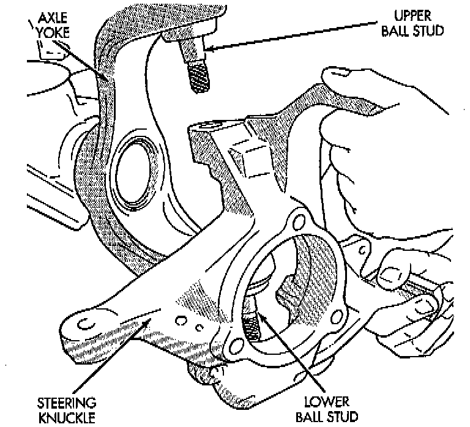
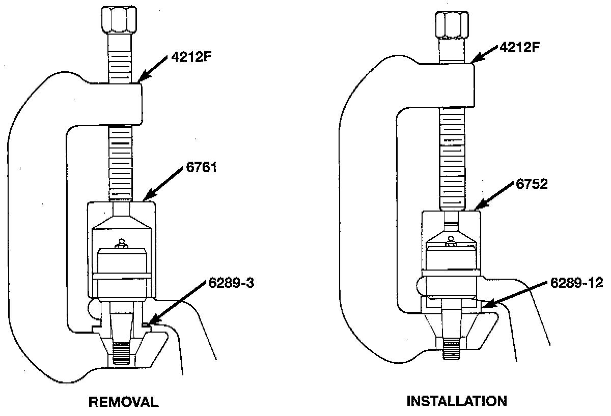
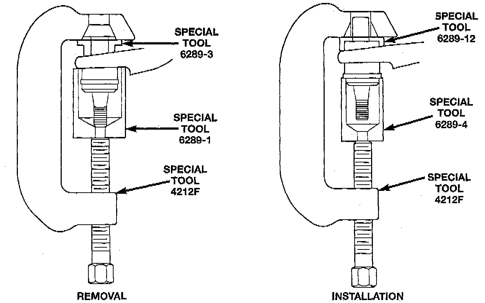

Rear Knuckle: Service and Repair
NOTE: Ball stud service procedures below require removal of the hub bearing and axle shaft. Removal and installation of upper and lower ball studs require the use of Tool Kit 6289, or equivalent.
KNUCKLE REMOVAL
1. Remove hub bearing and axle shaft.
2. Disconnect the tie-rod or drag link from the steering knuckle arm.
3. Remove the cotter pins from the upper and lower ball studs.
4. Remove the upper and lower ball stud nuts.
5. Strike the steering knuckle with a brass hammer to loosen knuckle from the ball studs. Remove knuckle from ball studs.

UPPER BALL STUD REPLACEMENT
Position tools as shown to remove and install ball stud.

LOWER BALL STUD REPLACEMENT
Position tools as shown to remove and install ball stud.
KNUCKLE INSTALLATION
1. Position the steering knuckle on the ball studs.
2. Install and tighten the bottom retaining nut to 109 Nm (80 ft. lbs.) torque. Install new cotter pin.
3. Install and tighten the top retaining nut to 101 Nm (75 ft. lbs.) torque. Install new cotter pin.
4. Install the hub bearing and axle shaft.
5. Connect the tie-rod or drag link end to the steering knuckle arm.